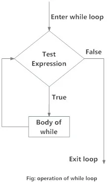

for Loop
What is for loop in Python?
The for loop in Python is used to iterate over a sequence (list, tuple, string) or other iterable objects. Iterating over a sequence is called traversal.
Syntax of for Loop
for val in sequence:
loop bodyHere, val is the variable that takes the value of the item inside the sequence on each
iteration.
Loop continues until we reach the last item in the sequence. The body of for loop is separated from the rest of the code using indentation.
Flowchart of for Loop

Example
# Program to find the sum of all numbers stored in a list # List of numbers numbers = [6, 5, 3, 8, 4, 2, 5, 4, 11] # variable to store the sum sum = 0 # iterate over the list for val in numbers: sum = sum+val print("The sum is", sum)When you run the program, the output will be:
The sum is 48
The range() function
We can generate a sequence of numbers using
range()function.range(10)will generate numbers from 0 to 9 (10 numbers).We can also define the start, stop and step size as
range(start, stop,step_size). step_size defaults to 1 if not provided.The
rangeobject is "lazy" in a sense because it doesn't generate every number that it "contains" when we create it. However, it is not an iterator since it supportsin,lenand__getitem__operations.This function does not store all the values in memory; it would be inefficient. So it remembers the start, stop, step size and generates the next number on the go.
To force this function to output all the items, we can use the function
list().The following example will clarify this.
print(range(10)) print(list(range(10))) print(list(range(2, 8))) print(list(range(2, 20, 3)))Output
range(0, 10) [0, 1, 2, 3, 4, 5, 6, 7, 8, 9] [2, 3, 4, 5, 6, 7] [2, 5, 8, 11, 14, 17]We can use the
range()function inforloops to iterate through a sequence of numbers. It can be combined with thelen()function to iterate through a sequence using indexing. Here is an example.# Program to iterate through a list using indexing genre = ['pop', 'rock', 'jazz'] # iterate over the list using index for i in range(len(genre)): print("I like", genre[i])Output
I like pop I like rock ​I like jazz
for loop with else
programiz.comA
forloop can have an optionalelseblock as well. Theelsepart is executed if the items in the sequence used in for loop exhausts.The break keyword can be used to stop a for loop. In such cases, the else part is ignored.
Hence, a for loop's else part runs if no break occurs.
Here is an example to illustrate this.
digits = [0, 1, 5] for i in digits: print(i) else: print("No items left.")When you run the program, the output will be:
0 1 5 No items left.Here, the for loop prints items of the list until the loop exhausts. When the for loop exhausts, it executes the block of code in the
elseand printsNo items left.This
for...elsestatement can be used with thebreakkeyword to run theelseblock only when thebreakkeyword was not executed. Let's take an example:# program to display student's marks from record student_name = 'Soyuj' marks = {'James': 90, 'Jules': 55, 'Arthur': 77} for student in marks: if student == student_name: print(marks[student]) break else: print('No entry with that name found.')Output
No entry with that name found.
while Loop
What is while loop in Python?
The while loop in Python is used to iterate over a block of code as long as the test expression (condition) is true.
We generally use this loop when we don't know the number of times to iterate beforehand.
Syntax of while Loop in Python
while test_expression:
Body of whileIn the while loop, test expression is checked first. The body of the loop is entered only if the
test_expression evaluates to True. After one iteration, the test
expression is checked
again. This process continues until the test_expression evaluates to
False.
In Python, the body of the while loop is determined through indentation.
The body starts with indentation and the first unindented line marks the end.
Flowchart

Example
# Program to add natural # numbers up to # sum = 1+2+3+...+n # To take input from the user, # n = int(input("Enter n: ")) n = 10 # initialize sum and counter sum = 0 i = 1 while i <= n: sum = sum + i i = i + 1 # update counter # print the sum print("The sum is", sum)When you run the program, the output will be:
Enter n: 10 The sum is 55In the above program, the test expression will be as long as our counter variable is less than or equal to (10 in our program).
TrueinWe need to increase the value of the counter variable in the body of the loop. This is very important (and mostly forgotten). Failing to do so will result in an infinite loop (never-ending loop).
Finally, the result is displayed.
While loop with else
programiz.comSame as with for loops, while loops can also have an optional block.
elseThe part is executed if the condition in the while loop evaluates to .
elseFalseThe while loop can be terminated with a break statement. In such cases, the part is ignored. Hence, a while loop's part runs if no break occurs and the condition is false.
elseelseHere is an example to illustrate this.
'''Example to illustrate the use of else statement with the while loop''' counter = 0 while counter < 3: print("Inside loop") counter=counter + 1 else: print("Inside else")Output
Inside loop Inside loop Inside loop Inside elseHere, we use a counter variable to print the string three times.
Inside loopOn the fourth iteration, the condition in becomes . Hence, the part is executed.
whileFalseelse
break and continue
What is the use of break and continue in Python?
In Python, break and continue statements can alter the flow of a normal
loop.
Loops iterate over a block of code until the test expression is false, but sometimes we wish to terminate the current iteration or even the whole loop without checking test expression.
The break and continue statements are used in these cases.
break statement
Python break statement
The break statement terminates the loop containing it. Control of the program flows to
the statement
immediately after the body of the loop.
If the break statement is inside a nested loop (loop inside another loop), the
break
statement will terminate the innermost loop.
Syntax of break
breakFlowchart of break
The working of break statement in for loop and while loop is shown below.
Example
programiz.com# Use of break statement inside the loop for val in "string": if val == "i": break print(val) print("The end")Output
s t r The endIn this program, we iterate through the
"string"sequence. We check if the letter isi, upon which we break from the loop. Hence, we see in our output that all the letters up tilligets printed. After that, the loop terminates.
continue statement
Python continue statement
The statement is used to skip the rest of the code inside a loop for the current iteration
only. Loop does not terminate but continues on with the next iteration.continue
Syntax of Continue
continueFlowchart of continue
The working of the statement in for and while loop is shown below.
continue
Example
# Program to show the use of continue statement inside loops for val in "string": if val == "i": continue print(val) print("The end")Output
s t r n g The endThis program is same as the above example except the statement has been replaced with .
breakcontinueWe continue with the loop, if the string is
programiz.comi, not executing the rest of the block. Hence, we see in our output that all the letters exceptigets printed.
pass statement
What is pass statement in Python?
In Python programming, the pass statement is a null statement. The difference between a
comment and a pass statement in
Python is that while the interpreter ignores a comment entirely, pass is not ignored.
However, nothing happens when the pass is executed. It results in no operation (NOP).
Syntax of pass
passWe generally use it as a placeholder.
Suppose we have a loop or a function that is not implemented yet, but we want to implement it in the
future. They cannot
have an empty body. The interpreter would give an error. So, we use the pass statement
to construct a body that does nothing.
Example
programiz.com'''pass is just a placeholder for functionality to be added later.''' sequence = {'p', 'a', 's', 's'} for val in sequence: passWe can do the same thing in an empty function or class as well.
def function(args): passclass Example: pass